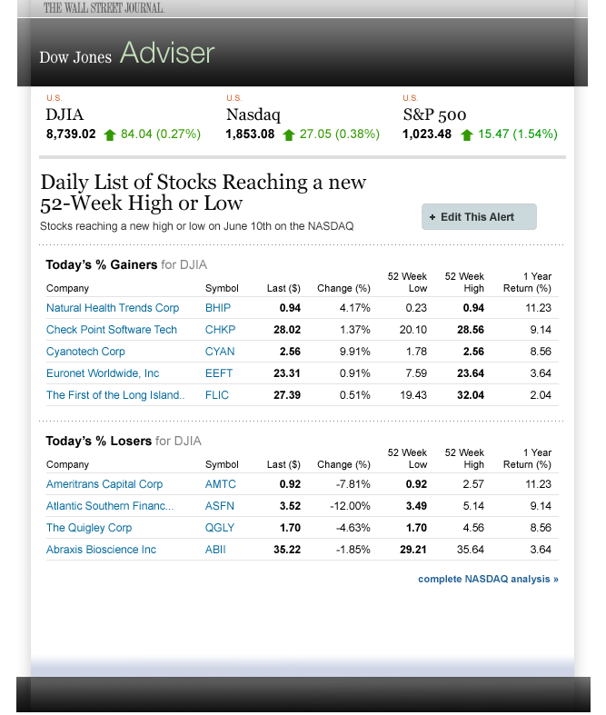
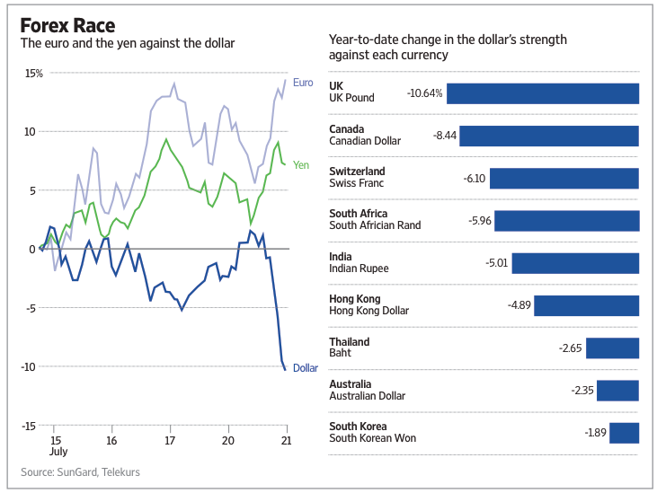
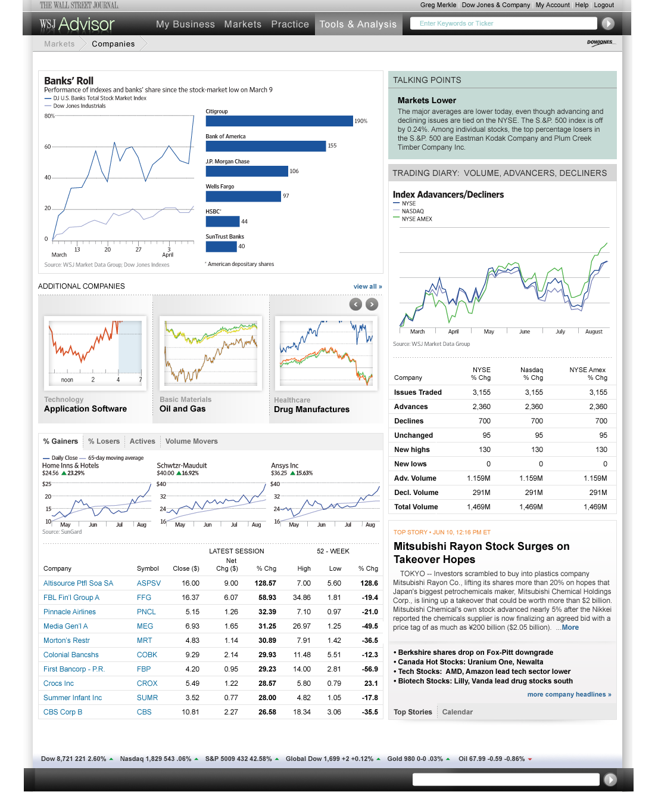

Finding an alternative to the newspaper industry
It’s sad to say, but newspapers are in decline. The Wall St. Journal is aggressively exploring ways to retool their unique financial expertise outside of the print industry. One of these new innovations takes the form of an information portal for use primarily by financial institutions. The idea here is that along with market data, researchers can see trends in the market along with Wall St. Journal articles that explain the influence in those trends. Along with that, the application also makes forecasting possible by using a sm art way to reveal data quickly.
As part of a team on this project, I helped with the day to day transitions with design and the acquisition of data displays. The challenge here was to vett and examine offerings from multiple data streams to be used in the application. I worked with financial analysts to determine ways to communicate trends in markets and triggers to display these points in charts, forms and interactive tools.
- 
- 
- 